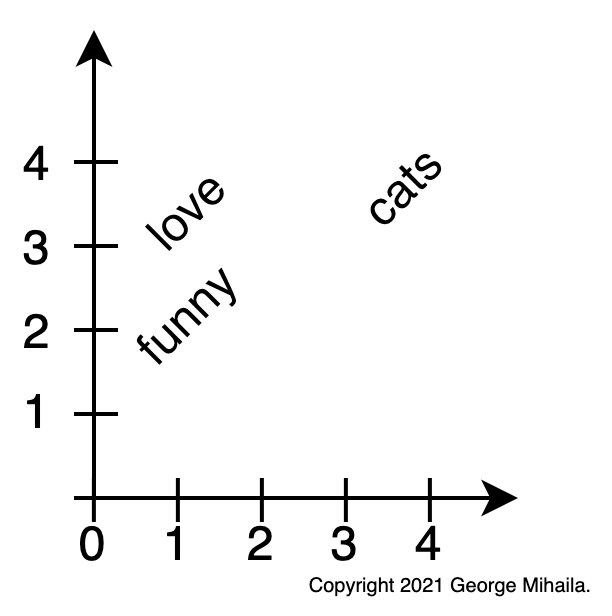
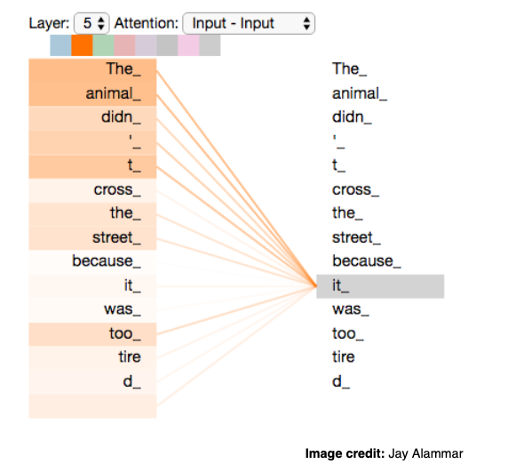

Natural Language Processing and Transformers
George Mihaila
PhD Candidate Computer Science University of North Texas
About me
- Research Scientist at Amazon.
- PhD Candidate Computer Science at University of North Texas.
- Over 5 years of experience in the field of Deep Learning, Machine Learning and Natural Language Processing (NLP).
- Over 3 years experience in industry as Machine Leaning Engineer, Data Scientist and Research Scientist.
- Technical reviewer for 2 NLP Transformers models books:
Transformers for Natural Language Processing(1st&2ndedition). - In my free time I like traveling, cooking and small projects like writing tutorials on NLP/Deep Learning.
Agenda
- Intro
- Understanding Natural Language Processing
- Word embeddings
- The Transformer model
- BERT model
- Architecture
- Inner Workings
- Embeddings
- Sentiment Analysis
- Conclusions
- Q&A
Intro
Wikipedia
Natural language processing (NLP) is a subfield of linguistics, computer science, and artificial intelligence concerned with the interactions between computers and human language …
… The result is a computer capable of "understanding" the contents of documents, including the contextual nuances of the language within them.
Understanding Natural Language Processing
Understanding Natural Language Processing
example = "I love cats! Cats are very funny."
Understanding Natural Language Processing
example = "I love cats! Cats are very funny."
vocabulary = ['i', 'love', 'cats', 'are', 'funny']
Understanding Natural Language Processing
example = "I love cats! Cats are very funny."
vocabulary = ['i', 'love', 'cats', 'are', 'funny']
word_id = {'i': 0, 'love': 1, 'cats': 2, 'are': 3, 'funny': 4}
Understanding Natural Language Processing
example = "I love cats! Cats are very funny."
vocabulary = ['i', 'love', 'cats', 'are', 'funny']
word_id = {'i': 0, 'love': 1, 'cats': 2, 'are': 3, 'funny': 4}
Encode text into numbers.
Word embeddings

Word embeddings
- Use numbers to represent words:
'love' : 1 'cats' : 2 'funny': 4

Word embeddings
-
Use numbers to represent words:
'love' : 1 'cats' : 2 'funny': 4 -
User vectors instead of numbers
'love' : [0.90, 3.10]
'cats' : [3.40, 3.20]
'funny': [0.45, 1.88]
Word embeddings
-
Use numbers to represent words:
'love' : 1 'cats' : 2 'funny': 4 -
User vectors instead of numbers
'love' : [0.90, 3.10] 'cats' : [3.40, 3.20] 'funny': [0.45, 1.88] -
Word embeddings are a type of word representation that allows words with similar meaning to have a similar representation.
The Transformer
- Is a deep neural network architecture for transforming one sequence into another one with the help of two parts (Encoder and Decoder).
- Was first introduced by Google in 2017 in the paper Attention Is All You Need.
- Is based solely on attention mechanisms.
- It brought "the biggest leap forward in the past five years, and one of the biggest leaps forward in the history of Search." for Google.
The Transformer
- Is a deep neural network architecture for transforming one sequence into another one with the help of two parts (Encoder and Decoder).
- It can transform an article to a summary or translate english to another language, etc.
The Transformer
- Is based solely on attention mechanisms.

- Disclaimer:
- I will not cover attention since this is not the intent of this presentation.
- The Illustrated Transformer by Jay Alammar is great resource!
BERT
Wikipedia
- Bidirectional Encoder Representations from Transformers (BERT) is a transformer-based machine learning technique for natural language processing (NLP) pre-training developed by Google.
- BERT was created and published in 2018 by Jacob Devlin and his colleagues from Google.
- In 2019, Google announced that it had begun leveraging BERT in its search engine, and by late 2020 it was using BERT in almost every English-language query.
- A 2020 literature survey concluded that "in a little over a year, BERT has become a ubiquitous baseline in NLP experiments".
Architecture
- We only have the encoder side of Transformer:

Inner Workings
{kind=link}

BERT Embeddings
"I love cats"is passed to the BERT model.- Output word embeddings for each word in the Word Sequence.
- Special symbol word at the beginning of any Word Sequence.
[CLS]used to represent meaning of the Word Sequence.- Context specific embeddings.
Movie Review Sentiment Analysis
-
We will target a particular Natural Language Processing (NLP) problem - Sentiment Analysis.
-
IMDB movie reviews sentiment dataset:
- This is a dataset for binary sentiment classification containing a set of 25,000 highly popular movie reviews for training, and 25,000 for testing.
Sentiment Analysis with BERT Embeddings
- Took
2,000random movie reviews from the IMDB movie reviews sentiment dataset. - Compressed each of the
768embeddings representation in2components using PCA. - Plot each movie review:
orange- positiveblue- negative
Sentiment Analysis with BERT Embeddings
Sentiment Analysis with BERT Embeddings
Sentiment Analysis with BERT Embeddings
I could not agree less with the rating that was given to this movie, and I believe this is a sample of how short minded
most of spectators are all over the world. Really... Are you forgetting that Cinema used to be a kind of art before...
- BERT model had some trouble understanding this review ?!
K-means with BERT embeddings
- Use K-means clustering with BERT embeddings.
-
We know we have two sentiments - number of clusters 2.
Fine-grained Sentiment Analysis
- Sentiment classifiers are used in binary classification (just positive or just negative sentiment).
- Fine-grained sentiment classification is a significantly more challenging task!
- Typical breakdown of fine-grained sentiment:
K-means with BERT embeddings
- Use K-means clustering with BERT embeddings.
- Try to find 3 sentiments (positive, neutral, negative) - number of clusters 3.
K-means with BERT embeddings
- Use K-means clustering with BERT embeddings.
- Try to find 5 sentiments (positive, weakly_positive, neutral, weakly_negative, negative) - number of clusters 5.

Try it out yourself

Conclusions
- I showed you:
- What word embeddings are.
- What are Transformers and BERT models.
- How BERT embeddings work.
- We did some sentiment analysis on a movie review dataset and how to find more sentiments.
Check out my Notebooks Tutorials
| Name | Description | Links |
|---|---|---|
 Better Batches with PyTorchText BucketIterator Better Batches with PyTorchText BucketIterator |
How to use PyTorchText BucketIterator to sort text data for better batching. | |
 Pretrain Transformers Models in PyTorch using Hugging Face Transformers Pretrain Transformers Models in PyTorch using Hugging Face Transformers |
Pretrain 67 transformers models on your custom dataset. | |
 Fine-tune Transformers in PyTorch using Hugging Face Transformers Fine-tune Transformers in PyTorch using Hugging Face Transformers |
Complete tutorial on how to fine-tune 73 transformer models for text classification — no code changes necessary! | |
| ⚙️ Bert Inner Workings in PyTorch using Hugging Face Transformers | Complete tutorial on how an input flows through Bert. | |
| üé± GPT2 For Text Classification using Hugging Face ü§ó Transformers | Complete tutorial on how to use GPT2 for text classification. |
Q&A
Thank you!
Contact üé£
Let's stay in touch!
ü¶ä GitHub: gmihaila
üåê Website: gmihaila.github.io
üëî LinkedIn: mihailageorge
üìì Medium: @gmihaila
üì¨ Email: georgemihaila@my.unt.edu.com